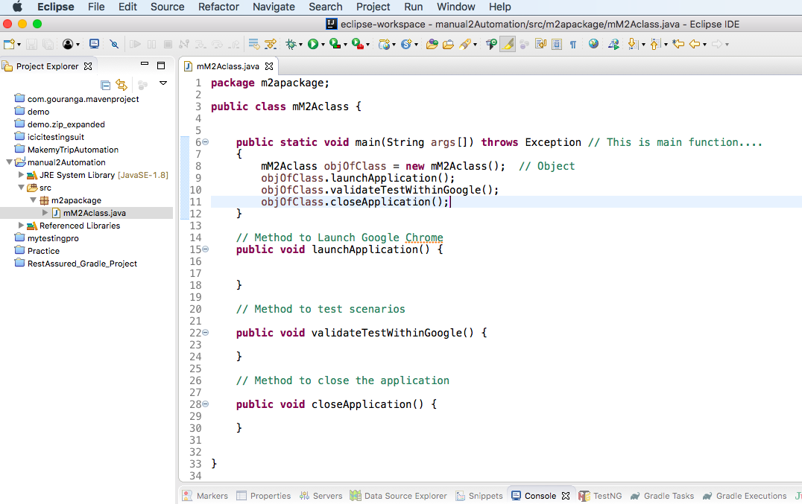

My First Selenium Scripts
1. Below scenario will launch Google Chrome then hit https://www.google.com , then will
validate
Google logo , search text bar , I'm feeling Lucky button.
Finally Close Chrome Browser
2. We already have explained up to create Class during
Selenium Java Set UpSection.
3. Once Class is created write main() method which is written below.
public static void main(String[] args)throws Exception
{
}
4. Now create an object of the class , that is
classname anyobjectName = new classname();
public static void main(String[] args)throws Exception
{
mM2Aclass objOfClass = new mM2Aclass(); // object
}
5. Now we are creating 3 methods within the class. launchApplication() ,
validateTestWithinGoogle() , closeApplication().
6. Once method creation is done then we are calling thesese methods from
main() method. Check below screenshot.

7. Download chromedriver from here
. Remember chromedriver path , which would Required below.
8. Now launchApplication() method is having code to initialize the Chrome WebDriver
and launch Google application.
9. Now validateTestWithinGoogle() method is having code to validate Google logo ,
Search bar and I'm feeling lucky button
10. And closeApplication() method is Closing Google Chrome after validation
11. Full code and screenshot is given below
package m2apackage;
import org.openqa.selenium.By;
import org.openqa.selenium.WebDriver;
import org.openqa.selenium.chrome.ChromeDriver;
public class mM2Aclass {
WebDriver driver;
public static void main(String args[]) throws Exception // This is main function
{
mM2Aclass objOfClass = new mM2Aclass(); // Object
objOfClass.launchApplication();
objOfClass.validateTestWithinGoogle();
objOfClass.closeApplication();
}
// Method to Launch Google Chrome
public void launchApplication() {
// System Property for Chrome Driver
System.setProperty("webdriver.chrome.driver","/Users/path/Downloads/chromedriver");
// Instantiate a ChromeDriver class.
driver=new ChromeDriver();
driver.get("https://www.google.com");
}
// Method to test scenarios
public void validateTestWithinGoogle() {
if (driver.findElement(By.id("hplogo")).isDisplayed()){
System.out.println("Google Logo is present");
}
if (driver.findElement(By.name("q")).isDisplayed()){
System.out.println("Google Search Text Box is present");
}
if (driver.findElement(By.name("btnI")).isDisplayed()){
System.out.println("I am Feeling lucky button is available");
}
}
// Method to close the application
public void closeApplication() {
driver.quit();
}
}